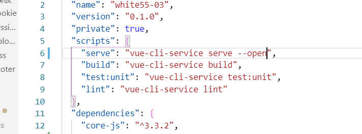
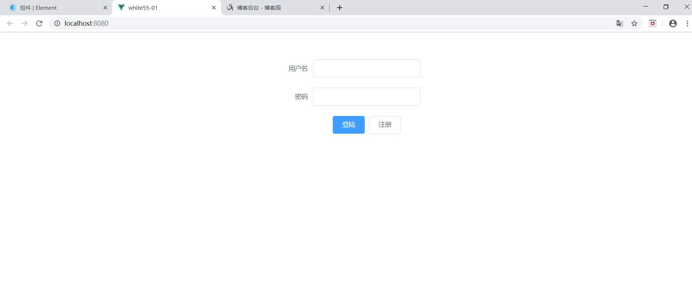
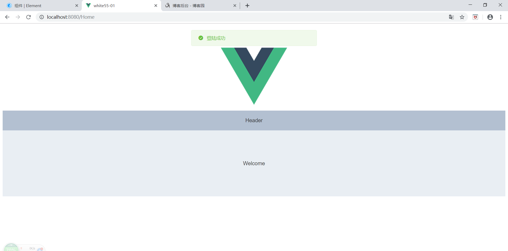
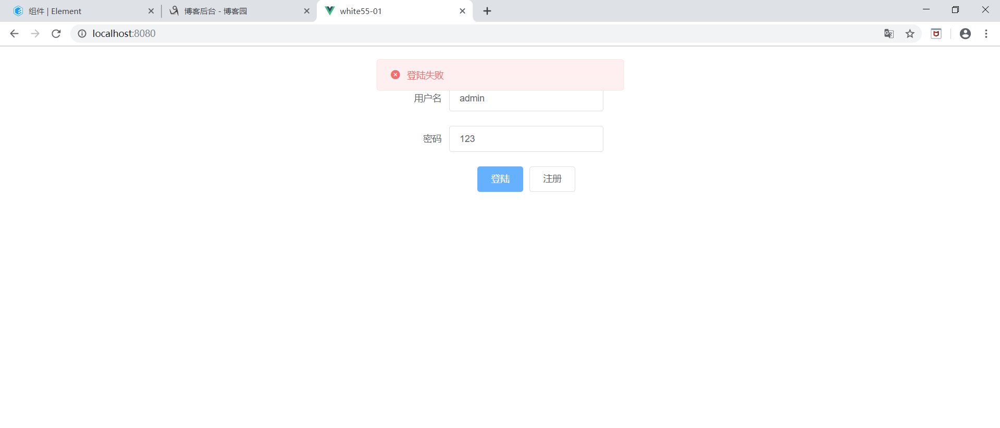

1.先用vue-cli3创建一个项目
2.安装element模块
全局安装
npm i element-ui -S3在main.js引入模块
import ElementUI from 'element-ui';
import 'element-ui/lib/theme-chalk/index.css';
Vue.use(ElementUI);4.这里先扩展一个小知识点
在package.json文件中找scripts下serve,在后面加上--open 可以实现运行项目后自动打开浏览器

5.然后我们在views文件夹下新建一个登陆页面login.vue
6.搭建login页面(这里我们简单的用element修饰一下)
<template>
<div class="firstdemo">
<el-form ref="form" :model="form" label-width="80px">
<el-row type="flex" justify="center">
<el-col :span="5">
<el-form-item label="用户名">
<el-input v-model="form.name"></el-input>
</el-form-item>
</el-col>
</el-row>
<el-row type="flex" justify="center">
<el-col :span="5">
<el-form-item label="密码">
<el-input v-model="form.password"></el-input>
</el-form-item>
</el-col>
</el-row>
<el-row type="flex" justify="center">
<el-col :span="5">
<el-form-item>
<el-button type="primary" @click="onSubmit">登陆</el-button>
<el-button>注册</el-button>
</el-form-item>
</el-col>
</el-row>
</el-form>
</div>
</template>
<script>
export default {
name: "fisrtdemo",
data() {
return {
form: {
name: "",
password: ""
}
};
},
methods: {
onSubmit() {
if (this.form.name == "admin" && this.form.password == "123456") {
this.$message({
message: '登陆成功',
type: 'success'
});
this.$router.push({ path: "/Home" });
}else{
this.$message.error('登陆失败');
}
}
}
};
</script>
<style lang="stylus" scoped></style>由于只是简单的展示以下 这里我们用一个死数据
这里简单强调一下在逻辑层实现路由切换
<!-- router.push({path:'/foo'}) -->
<!-- 声明式导航 应用于视图层 -->
<router-link to='/foo'>to foo</router-link>
<router-view></router-view>
<!-- 编程式导航 应用于逻辑层-->
<!-- router.push({path:'/foo'}) -->到这里login页面基本搭建完成
7.在router下的index.js中引入我们刚刚创建的login.vue
并对路径作相应改动
index.js
import Vue from "vue";
import VueRouter from "vue-router";
import Home from "../views/Home.vue";
import login from "../views/login.vue";
Vue.use(VueRouter);
const routes = [
{
path: "/",
name: "login",
component: login
},
{
path: "/Home",
name: "home",
component: Home
},
{
path: "/about",
name: "about",
// route level code-splitting
// this generates a separate chunk (about.[hash].js) for this route
// which is lazy-loaded when the route is visited.
component: () =>
import(/* webpackChunkName: "about" */ "../views/About.vue")
}
];
const router = new VueRouter({
mode: "history",
base: process.env.BASE_URL,
routes
});
export default router;8.最后我们对home作一下简单修饰。
博主这里在components中新建了一个组件helloworld并引入了element中的一个简单的布局容器。
然后在home页面引入helloworld对页面进行渲染(当然也可以像上面一样直接在home中引入element布局容器)
9.运行 npm run serve
10.下面展示以下效果


